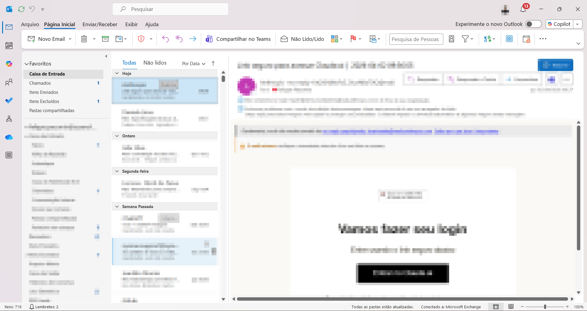
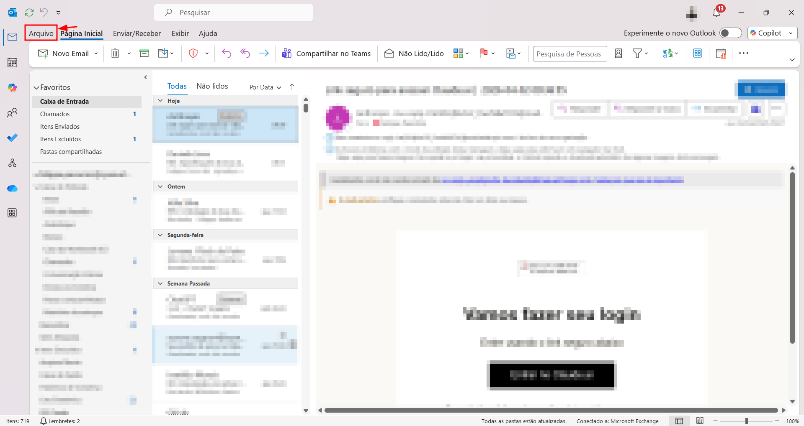
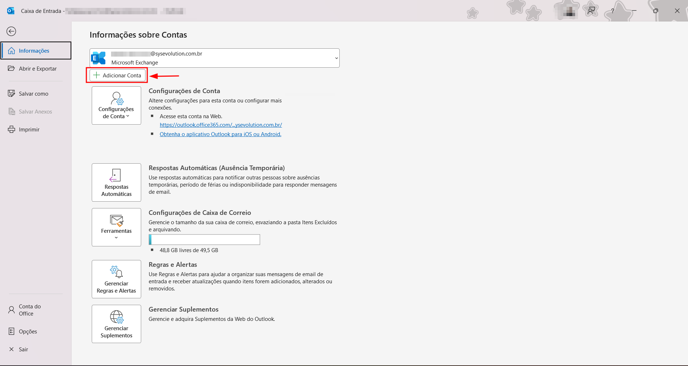
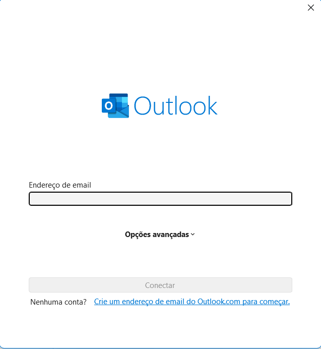
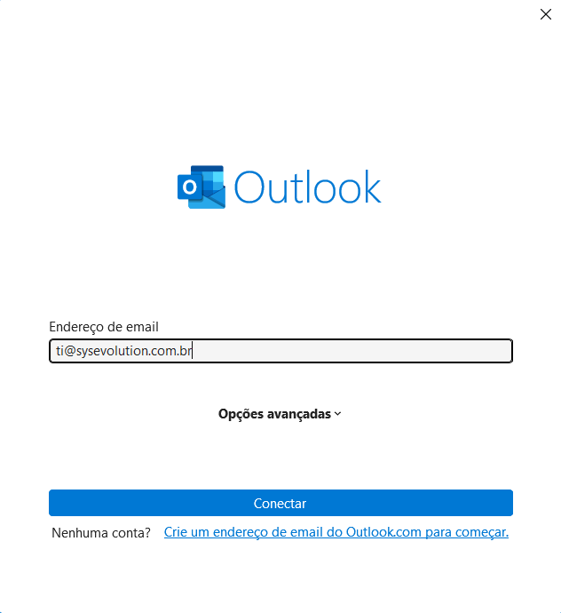
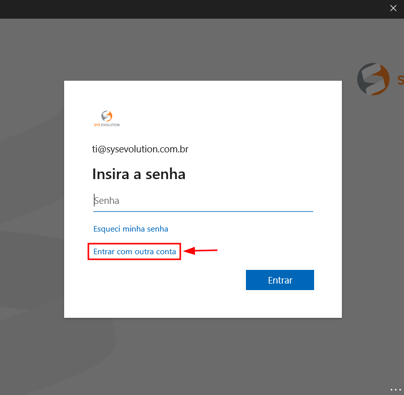
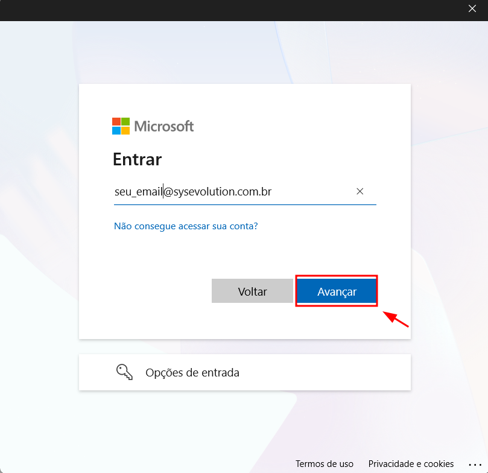
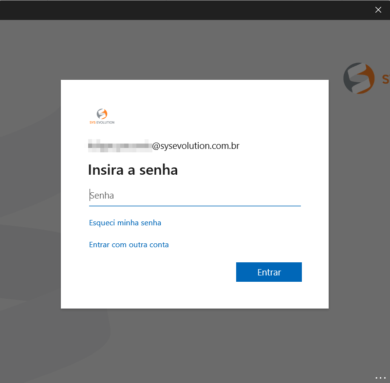
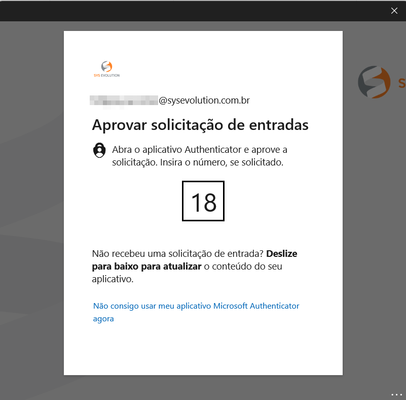

Como adicionar uma caixa compartilhada
no Outlook
Vincule e-mails compartilhados da sua organização diretamente no Outlook Classic.
Este guia detalha os passos para adicionar uma caixa de e-mail compartilhada no Outlook (versão Classic). Caixas compartilhadas permitem que vários colaboradores acessem e gerenciem um único endereço de e-mail, facilitando o trabalho em equipe.
Abrir o Outlook
Abra o Outlook (versão Classic) no seu computador.

Acessar o menu Arquivo
Na parte superior esquerda da tela do Outlook, clique em "Arquivo" para acessar as configurações da conta.

Adicionar conta
Na seção "Informações sobre Contas", clique no botão "Adicionar Conta".


Inserir o e-mail da caixa compartilhada
Digite o endereço de e-mail da caixa compartilhada que você deseja vincular e clique em "Conectar".

Entrar com outra conta
No momento em que o Outlook solicitar a senha, não insira a senha diretamente. Em vez disso, clique na opção "Entrar com outra conta".

Inserir seu e-mail corporativo
Na tela de login, insira o seu e-mail corporativo pessoal (não o e-mail compartilhado) e clique em "Avançar".

Inserir sua senha
Digite a senha da sua conta corporativa e clique em "Entrar".

Aprovar a solicitação no Microsoft Authenticator
Aprove a solicitação de entrada no aplicativo Microsoft Authenticator em seu celular. Após a aprovação, aguarde a configuração ser concluída.

Pronto!
Feche e abra o Outlook novamente. A caixa de e-mail compartilhada deve aparecer na lateral esquerda do Outlook, logo abaixo do seu e-mail pessoal.
📋 Observações
Em caso de dúvidas ou problemas durante o processo, entre em contato
com a equipe de Service Desk nos canais:


Também estamos disponíveis no Microsoft Teams.